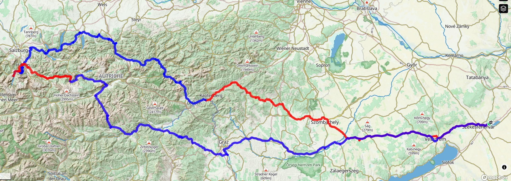

Sasfészek túra
Motoros Kaland az Alpokban • 2026
4 napos túra: 1169 km élménymotorozás, hágók és történelmi helyszínek.
DAY 01 – Indulás Bruck an der Mur-ba
Velence → Bruck an der Mur. Tranzit szakasz a Dunántúlon és Burgenlandon át.
📏 314 km | ⛰️ 3328 m | 📉 2959 m

DAY 02 – Hágók és Tavak
Bruck an der Mur → Königssee. Alpesi panoráma utak és kristálytiszta tavak.
📏 280 km | ⛰️ 4516 m | 📉 4419 m

DAY 03 – A Sasfészek napja
Königssee → Hallstatt. Kehlsteinhaus meglátogatása és pihenő Hallstattban.
📏 81 km | ⛰️ 1964 m | 📉 2043 m

DAY 04 – Hazatérés
Hallstatt → Velence. Hosszú túra hágókkal és búcsú az Alpoktól.
📏 494 km | ⛰️ 4232 m | 📉 4624 m

Főtérkép
